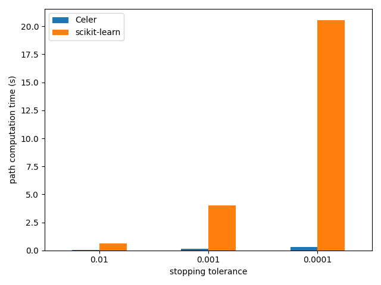

Note
Click here to download the full example code
Lasso path computation on Leukemia dataset¶
The example runs the Celer algorithm for the Lasso on the Leukemia dataset which is a dense dataset.
Running time is compared with the scikit-learn implementation.
Out:
Loading data...
Starting path computation...
Celer time: 0.03 s
Celer time: 0.10 s
Celer time: 0.24 s
import time
import pandas as pd
import numpy as np
import matplotlib.pyplot as plt
from sklearn.linear_model import lasso_path
from sklearn.datasets import fetch_openml
from celer import celer_path
print(__doc__)
print("Loading data...")
dataset = fetch_openml("leukemia")
X = np.asfortranarray(dataset.data.astype(float))
y = 2 * ((dataset.target != "AML") - 0.5)
n_samples = len(y)
y -= np.mean(y)
y /= np.std(y)
print("Starting path computation...")
alpha_max = np.max(np.abs(X.T.dot(y))) / n_samples
n_alphas = 100
alphas = alpha_max * np.geomspace(1, 0.01, n_alphas)
tols = [1e-2, 1e-3, 1e-4]
results = np.zeros([2, len(tols)])
for tol_ix, tol in enumerate(tols):
t0 = time.time()
_, coefs, gaps = celer_path(
X, y, pb='lasso', alphas=alphas, tol=tol, prune=True)
results[0, tol_ix] = time.time() - t0
print('Celer time: %.2f s' % results[0, tol_ix])
t0 = time.time()
_, coefs, dual_gaps = lasso_path(
X, y, tol=tol, alphas=alphas, max_iter=10_000)
results[1, tol_ix] = time.time() - t0
df = pd.DataFrame(results.T, columns=["Celer", "scikit-learn"])
df.index = [str(tol) for tol in tols]
df.plot.bar(rot=0)
plt.xlabel("stopping tolerance")
plt.ylabel("path computation time (s)")
plt.tight_layout()
plt.show()
Total running time of the script: ( 0 minutes 26.914 seconds)